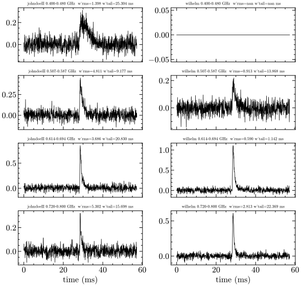

Co-detection manuscript figures
5 figures across 6 sections. Built by analysis/build_manuscript.py — SVG where available (scale freely). Re-run with --regen to refresh from source.
burst_energies PNG

Isotropic-equivalent energies of the co-detected FRBs, integrated over the CHIME ($0.4$--$0.8\,\mathrm{GHz}$) and DSA ($1.31$--$1.50\,\mathrm{GHz}$) bands from the joint scattering fit and put on an absolute scale with each band's flux calibration. $\gamma_C,\gamma_D$ are the per-band spectral indices; $E_{\mathrm{iso}}$ includes the $(1+z)$ k-correction. The quoted $1\sigma$ uncertainty combines the per-band $c_0$ posterior width with the absolute-scale systematic (SEFD and primary-beam, $\sim\!0.25$ dex CHIME, $\sim\!0.20$ dex DSA), added in quadrature across the two bands.
analysis/burst_energies/bandpass_check.png
chime_dm SVG

Independent CHIME-side DM for the 12 co-detected FRBs. Each cell shows, for one burst, the CHIME baseband coherently dedispersed at the DSA DM (top: frequency--time z-score, with a $\sim\!1\,\mathrm{ms}$ boxcar time-smoothing applied for display only) and the scatter-deconvolved sub-band arrival times $t_0$ against $K_{\mathrm{DM}}(\nu^{-2}-\nu_{\mathrm{ref}}^{-2})$ (bottom: points with the red weighted-linear fit whose slope is the residual DM offset $\Delta\mathrm{DM}$). Green titles mark the $8/12$ sightlines that constrain the CHIME DM, all with a near-flat residual slope consistent with the DSA value to within the $1\,\mathrm{pc\,cm^{-3}}$ floor; grey titles mark the $4/12$ non-detections (fewer than three sub-bands above $\mathrm{S/N}=4$), shown with their waterfall but no fit. The absence of any steep positive residual slope demonstrates that the apparent $+2$--$3\,\mathrm{pc\,cm^{-3}}$ DM excess of the faint bursts under a structure-blind dedispersion is the $\mathrm{S/N}$-maximization bias of a one-sided scattering tail, not a real DM difference.
analysis/chime_dm/chime_dm_grid.svg
chime_subband SVG

Within-CHIME sub-band profiles for the co-detected FRBs johndoeII and wilhelm, each split into four $80\,\mathrm{MHz}$ sub-bands across $0.40$--$0.80\,\mathrm{GHz}$. Each panel shows the baseline-subtracted on-pulse profile against time, annotated with the model-free rms width $w_{\mathrm{rms}}$ and the trailing-edge $e$-folding time $w_{\mathrm{tail}}$. A purely scattering origin predicts both widths increasing toward lower frequency as $\nu^{-\alpha}$, whereas frequency-independent intrinsic sub-structure does not; the empty $0.40$--$0.48\,\mathrm{GHz}$ sub-band for wilhelm is a data gap, not a non-detection. This profile-shape evolution is the diagnostic we use to flag unmodelled temporal sub-components before a scattering index is quoted, since such components otherwise bias the recovered $\alpha$ high.
analysis/scattering-refit-2026-06/chime_subband/chime_subband_compare.svg
wilhelm PNG

Full-band UNIFIED-model joint waterfall for wilhelm. Layout: DSA (1.31-1.50 GHz) TOP, CHIME (0.40-0.80 GHz) BOTTOM, 0.80-1.31 GHz gap blank/gray. Three panels L->R: REAL DATA, UNIFIED MODEL, RESIDUAL (gain-marginal, +-4 sigma). Time axis = inter-observatory-delay-corrected absolute arrival: both band peaks at tau=0 (green dotted). MODEL is built from ONE source law -- intrinsic width zeta(nu)=zeta_1ghz*nu^x_zeta (zeta_1ghz=0.097 ms, x_zeta=-1.19; x_zeta<0 = narrows with freq, RFM) and scattering tau(nu)=tau_1ghz*nu^-alpha (tau_1ghz=0.251 ms, alpha=2.56) -- evaluated per channel with dm_init=0 across CHIME+gap+DSA. EXPECT in the MODEL panel: a single coherent burst whose width varies MONOTONICALLY and SMOOTHLY from narrow at DSA (top) through the gap to the broad scattered tail at CHIME (bottom), with NO width discontinuity at either band/gap edge (the gap is the seamless bridge), spanning the full time axis in every channel. RESIDUAL: gain-marginal so amplitude/scint is absorbed -- expect ~white (|resid|<~3) if the scattering+width law fits; a coherent red/blue block = remaining temporal shape misfit (e.g. unmodelled sub-structure). Annotation: measured offset +4.67 ms = geometric -2.15 + clock +6.82, DM=602.3. PAPER-STYLED (2026-06-22 polish): serif/stix fonts; panels labelled (a) data / (b) unified model / (c) residual, each with its own colorbar (norm. flux for a+b, residual sigma diverging for c); 'DSA' (top) / 'CHIME' (bottom) white band labels at the right of panel (a); cyan dashed = band edges, green dotted = aligned arrival; 2-line serif suptitle carrying alpha/tau/zeta/x_zeta/DM + the TOA decomposition. The white-dashed DSA pre-correction marker is drawn ONLY if -offset lands within the time axis; for wilhelm -4.67 ms < axis-min -2.46 ms so it is correctly OMITTED (the prior off-axis-edge cosmetic is resolved).
analysis/scattering-refit-2026-06/figures/wilhelm/wilhelm_fullband_unified.png
wilhelm PNG

Two-panel paper-draft two-screen science figure for wilhelm (FRB 20221203A; l=107.1, b=16.7). Suptitle: DM=602.3, alpha_tau=2.69, tau_1GHz=0.26 ms, 'two screens: dnu_d-screen != tau-screen'. PANEL (a) scattering<->scintillation reciprocity plane (both log axes): x=pulse-broadening tau (ms), y=scintillation bandwidth dnu_d (MHz). A gray diagonal BAND is the single-thin-screen locus 2*pi*tau*dnu_d=C1 for C1 in [0.5,2] (Cordes&Rickett). Three measured points should sit FAR ABOVE that band (the whole point): DSA narrow scint (red circle, ~0.12 MHz) and DSA broad scint (orange square, ~5.3 MHz) both at tau(DSA)~0.10 ms; CHIME scint as a green down-triangle UPPER LIMIT at the 0.39 MHz native-channel ceiling, tau(CHIME)~0.72 ms. Dotted drop-lines connect each band's tau to where the single-screen locus would predict its dnu_d (black x markers far below), with a '2*pi*tau*dnu_d ~ 10^2 (off single-screen)' callout. Legend lower-right (must NOT occlude the orange square). MESSAGE: measured (tau, dnu_d) is ~80-270x off the single-screen reciprocity => the tau-screen and dnu_d-screen are DIFFERENT screens. PANEL (b) inferred line-of-sight screen geometry CARTOON (axes off), now NE2025-ANCHORED (mwprop.nemod.NE2025 via ne2025_sightline.py, run live at figure-build): Earth (CHIME+DSA, green star) at left; a near MW screen (blue bar) labelled 'NE2025: d_eff=2.5 kpc, dnu_d^MW~1.1 MHz @1.4 GHz (cf. broad 5.3 MHz scintle)'; a broken-distance '//' marker (kpc->Gpc); a host galaxy (yellow ellipse, z~0.47 est.) with the FRB (open red star) at right; a near-source 'host tau-screen' (red bar) just in front of the source; a faint red multipath cone from source reconverging at Earth; and a pink ALLOWED-ZONE rectangle with a <-> arrow labelled 'tau-screen <~ 227 Mpc from src (coherence limit, NE2025 d_MW)'. A prominent red bottom line states the headline result: 'tau_1GHz=260us >> NE2025 MW floor 0.8us (x345) => tau-screen is extragalactic'. EXPECT: no label overlaps; the MW screen distance is now NE2025's effective screen distance (2.52 kpc), not a guess; the coherence bound is drawn as a finite allowed zone (z-dependent). FLAGGED/fiducial: z=0.47 and D_A=1330 Mpc remain estimates (no in-repo host redshift) -- the coherence Mpc number scales with them. The MW prediction (DM_MW=77, tau_MW@1GHz=0.75us, dnu_d^MW@1GHz=0.245 MHz, d_eff=2.52 kpc) is real NE2025 output for l=107.135 b=16.691.
analysis/scattering-refit-2026-06/figures/wilhelm/wilhelm_twoscreen.png